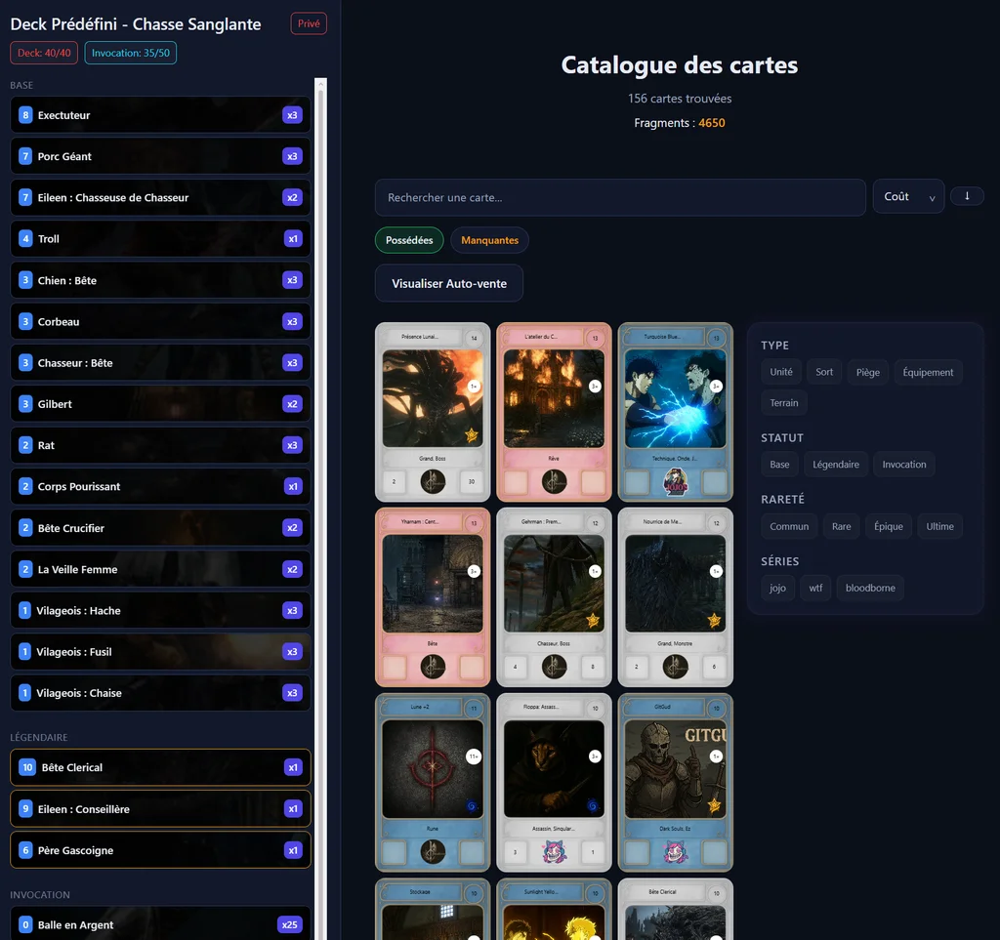
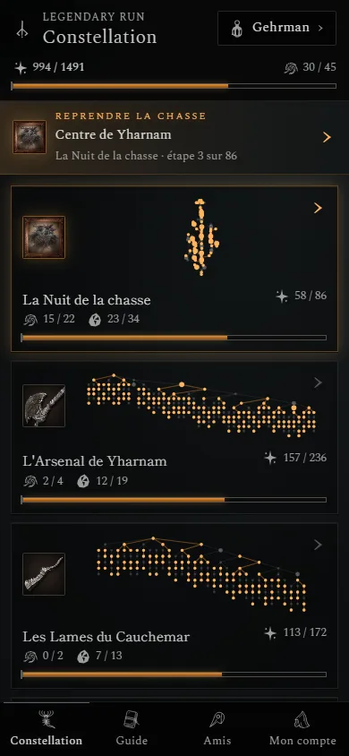
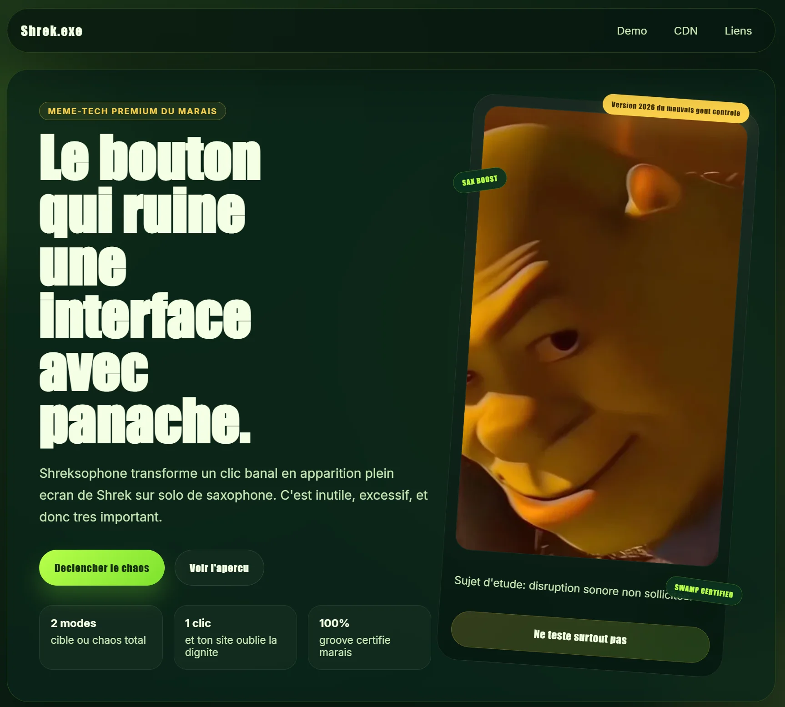

Maîtriser
Méthode — d’abord
S’approprier vite ce qui se fait.
Maîtriser
Les preuves
- Le programme de développeur web bouclé en un mois.
- À chaque mise à jour de Gwent, deux jours pour maîtriser ce que jouent les autres.
Charles Lindecker
Architecte logiciel, je code depuis mes 13 ans. J’ai formé des développeurs jusqu’à leur titre, et je mène aujourd’hui le pôle francophone d’un projet open source.
Méthode — d’abord
S’approprier vite ce qui se fait.
Maîtriser
Les preuves
Méthode — ensuite
Sortir des sentiers battus.
Réinventer
Les preuves
Méthode — puis
Faire progresser les autres.
Emmener
Les preuves
Une carte se retourne d’un clic : ses preuves sont au dos.
Mon parcours n’a rien d’une ligne droite. C’est en chemin que ma méthode s’est forgée.
Vers 10 ans
Avec mon père, informaticien, je démonte de vieux PC hors service. À 13 ans, j’apprends le C sur OpenClassrooms avec une idée fixe : coder mes propres jeux sur Unreal Engine. Avec mon cousin, on invente un jeu de cartes sur papier, dont on sort des éditions sans fin. On passe des après-midi entiers à plastifier les cartes à la main.
Vers 17 ans
« Juste moi et mes propres décisions. »
Je découvre Gwent, un jeu de cartes en ligne. Pas d’excuse en cas de défaite pour jeter la faute sur un autre : juste moi et mes propres décisions. Je teste un deck, puis un deuxième, puis un troisième. Quand c’est un flop, j’apprends de ce flop et je comprends où mon instinct m’a trompé, ce qui l’aiguise. En un an, j’approche du classement mondial, puis je plafonne pendant quatre mois. Copier ce que jouent les meilleurs ne suffit plus. Alors je fais l’inverse : je construis un deck à contre-courant, et c’est lui qui me fait entrer dans le classement mondial.
Avant 2025
BUT Informatique, fac de physique-chimie, BUT Réseaux & Télécoms : trois années de filières classiques, une chacune. Puis la piscine de 42, sans admission. Ça n’a pas vraiment marché, mais je n’ai pas abandonné : j’ai recommencé jusqu’à réussir, et je me suis réorienté autant que nécessaire.
2025
Je passe le titre de Développeur web et web mobile chez Elan Formation. Je boucle le programme en un mois, je mène des projets en parallèle et je couvre en bonus l’essentiel du niveau supérieur, Concepteur développeur d’applications. En stage chez ATIS, mes modules réduisent de 30 % le temps de traitement administratif.
Fin 2025
Deux mois après mon titre, l’école perd son formateur en fin de promotion. Des étudiants croisés pendant mon cursus donnent mon nom. Je reprends une dizaine d’apprenants, dont la moitié prépare le CDA, un niveau au-dessus de mon propre titre. Tous obtiennent leur titre.
Je suis architecte logiciel : développement web et DevOps. À côté, je suis lead et mainteneur du pôle francophone de PvZ Fusion, et je construis mes propres outils. Trois verbes résument ma façon de travailler.
Charles Lindecker
Lead et mainteneur, PvZ Fusion
13 ansmes premières lignes de C
Trois projets menés au bout, racontés comme ils se sont passés : le problème, la décision, le résultat.

Preuve — EmmenerOpen source, bénévole
Problème. Une traduction française en retard de plusieurs années, pleine d’erreurs, et des bénévoles qui arrivent sans méthode.
Décision. Structurer le pôle : accueil et formation des nouveaux, revues systématiques, documentation, et des outils en Python pour repérer ce qui manque à chaque version.
Résultat. En dix mois, une version à jour et propre. Une vingtaine de contributeurs formés, dix au plus fort, et une nomination comme mainteneur du projet multilingue.
« La qualité et la sincérité des échanges démultiplient les résultats. »

Preuve — RéinventerProjet personnel
Problème. Le jeu de cartes inventé avec mon cousin attend depuis des années de devenir un jeu vidéo. Le projet traîne.
Décision. Un moment, j’en ai eu marre : j’ai repris le projet seul. J’ai rééquilibré nos cartes et codé mon propre moteur de jeu sur une stack que je maîtrisais déjà, .NET et Angular, pour me lancer tout de suite.
Résultat. Un moteur de règles en temps réel qui tourne dans le navigateur, environ trois mois de travail cumulé. Ses limites m’ont forcé à apprendre SignalR, le cache, l’optimisation DevOps et le prérendu serveur.
« Le projet qui m’a fait le plus apprendre. »

Preuve — MaîtriserOpen source
Problème. Une machine de développeur accumule des dizaines de gestionnaires de paquets, chacun avec sa propre commande de mise à jour.
Décision. Une seule CLI qui détecte ce qui est installé et met tout à jour, sur Windows, macOS et Linux.
Résultat. 153 sources prises en charge, et 447 téléchargements npm en un mois, du 5 septembre au 4 octobre 2026.
La troisième étude de cas reste à arbitrer : gup, ou le portfolio V1.
Quatre cartes face cachée : un clic les retourne.
Entré au classement mondial avec un deck à contre-courant, puis plusieurs passages dans le top 500.

Mon jeu préféré. Au point de lui coder une application compagnon : une API .NET, une appli Android et une constellation de succès à débloquer.

Un clic, et l’interface laisse place à Shrek au saxophone. Volontairement absurde.
Écouter ShreksophoneDes challenges de sécurité offensive, en loisir.
Je ne sais toujours pas ce qu’est le sommeil.
Une équipe à faire progresser, un problème qui résiste aux solutions habituelles : parlons-en.
Fin de la maquette. Ci-dessous : le design system de la proposition, puis pourquoi cette direction.
Une table violette, des cartes ivoire, trois couleurs pour trois verbes. Tout ce qui suit sert à poser des preuves sur la table, jamais à décorer.
Bleu, rouge, vert : le trio se lit instantanément comme des couleurs de jeu, et chacun tient l’AA en texte sur l’ivoire comme en fond sous l’ivoire.
Brygada 1918
Titres, texte courant, texte des cartes. Revival polonais d’un caractère de 1918 : assez solide pour le texte d’une carte, assez typé pour un titre. Gwent et The Witcher sont polonais, clin d’œil pour initiés.
400, 500, 600, 700, italiques 400 à 600.
20 317 447 153
Barlow Condensed, seulement pour les chiffres des coins de carte et quelques micro-éléments (« Éd. 7 », jetons de temps). Étroite, nette, lisible petit. Jamais pour une phrase.
600, 700.
| Niveau | Spécimen | Taille / interligne / graisse |
|---|---|---|
| Display (h1) | Les règles du jeu | 68 px · 1,04 · 600 |
| Titre de section (h2) | Les preuves | 48 px · 1,08 · 600 |
| Titre de carte (h3) | Gwent, la méthode | 22–26 px · 1,15 · 700 |
| Chapeau | Je code depuis mes 13 ans. | 21 px · 1,55 · 400 |
| Corps | Je teste un deck, puis un deuxième, puis un troisième. | 18 px · 1,65 · 400 |
| Texte de carte | Une seule CLI qui détecte ce qui est installé. | 15,5 px · 1,5 · 400 |
| Ligne de type | Preuve — Emmener | 14,5 px · 1,3 · 500 it. |
| Texte d’ambiance | « Juste moi et mes propres décisions. » | 17–19 px · 1,4 · 500 it. |
| Chiffre de coin | 447 | 30 px · 1 · 700 Barlow |
| Petit | mois de travail cumulé | 13–14 px · 1,45 · 400 |
Échelle classique (14, 16, 18, 21, 24, 36, 48, 60, 72). Les cartes de la main règlent leur texte sur leur propre largeur (unités cqi), avec un plancher à 12,5 px.
Conteneur 1240 px, gouttières de 16 à 48 px. Colonne de lecture : 62 caractères dans les cartes, 40 em pour les chapeaux. Les sections respirent de 72 à 128 px.
Coins coupés à la main : 14 / 12 / 15 / 13 px, jamais quatre fois le même (quatre découpes tournent). Cadre or de 1 px à 7 px du bord. Rive de plastification translucide de 3 px autour de chaque carte.
Un format par rôle : rien n’est la même carte arrondie répétée.
≈ 20contributeurs formés
447téléchargements en un mois
« La qualité et la sincérité des échanges démultiplient les résultats. »
Toujours une phrase de Charles, en italique, sous un filet or. Jamais une formule toute faite en ouverture.
Vers 17 ans
2025
Preuve — MaîtriserOpen source
Problème. Des dizaines de gestionnaires de paquets…
Décision. Une seule CLI…
Résultat. 153 sources…
Discutons
Une équipe à faire progresser, un problème qui résiste aux solutions habituelles : parlons-en.
Une seule carte, la plus grande, double cadre or. Répété en fin de page et accessible depuis l’en-tête (« M’écrire »).
Version provisoire au trait, déjà cohérente : la génération (C-02) peut l’enrichir d’une matière gravée, ou la série peut rester telle quelle.
Monogramme « CL » dans un médaillon, treillis or sur violet. Sert aussi de logo dans l’en-tête et de favicon (C-08).
Les photos gardent leurs vraies couleurs : le bleu roi de la chemise répond au bleu de « Maîtriser ». Les captures ne sont jamais retouchées ; celles d’Omnicard seront refaites sans illustrations tierces.
cubic-bezier(.2,.75,.25,1), 90 ms de décalage entre les cartes. Une seule fois, jamais en boucle.aria-pressed, et un nom explicite (« Voir les preuves de la carte Maîtriser »). Les deux faces restent dans le DOM et sont lues dans l’ordre.aria-expanded et inert sur la face cachée, pour qu’aucun lien invisible ne reçoive le focus.prefers-reduced-motion./* Contre-jeu — tokens */
:root {
/* La table */
--tapis: #1E1630; --tapis-2: #281D3F; --tapis-3: #140E22;
--texte: #ECE6F5; --texte-2: #B4A9CB;
/* Les cartes */
--carte: #F3EEE2; --carte-2: #E9E2D2;
--encre: #1D1A22; --encre-2: #4F4858;
--or: #C9A24D; --or-clair: #D8B865; --or-sombre: #7A5B1C;
/* Les factions */
--maitriser: #2F62A8; --reinventer: #B23A48; --emmener: #276B4A;
/* Formes */
--coins: 14px 12px 15px 13px; --coins-cadre: 9px 8px 10px 8px; --rive: 3px;
/* Typographie */
--serif: "Brygada 1918", Georgia, serif;
--chiffres: "Barlow Condensed", "Arial Narrow", sans-serif;
/* Espacement */
--s1: 4px; --s2: 8px; --s3: 12px; --s4: 16px; --s5: 24px;
--s6: 32px; --s7: 48px; --s8: 64px; --s9: 96px; --s10: 128px;
/* Mouvement */
--t-donne: 900ms; --t-retourne: 520ms; --t-survol: 160ms;
--ease-donne: cubic-bezier(.2, .75, .25, 1);
--ease-retourne: cubic-bezier(.45, .05, .2, 1);
}Ta méthode est née autour d’une table de cartes : tester un deck, puis un deuxième, comprendre où l’instinct s’est trompé, et finir par jouer à contre-courant. Contre-jeu pose ton parcours sur cette table. Chaque carte est une pièce à conviction : sa couleur dit quel verbe elle prouve, son coin donne le chiffre, son italique te cite. Le visiteur ne lit pas une liste de compétences, il regarde une main bien construite.
Le détail (formats, prompts) est dans docs/assets-a-generer.md.